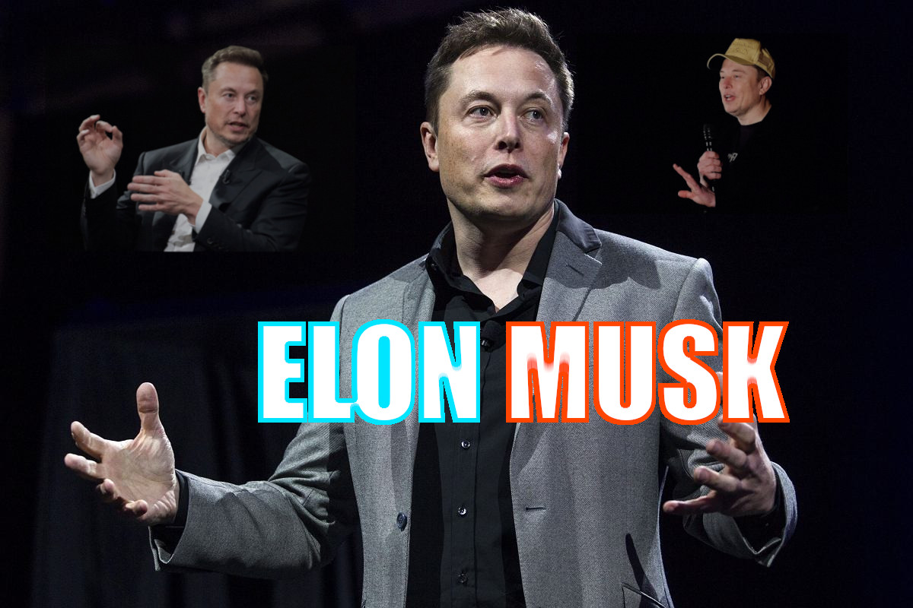

ŻYCIORYS ELONA MUSKA

Młodość i edukacja
1.1 Dzieciństwo w RPA i pierwsze programy
1.2 Emigracja do Kanady i studia w USA
Pierwsze sukcesy biznesowe
2.1 Zip2 – pierwszy duży startup
2.2 X.com i powstanie systemu PayPal
Wielkie rewolucje: Kosmos i Motoryzacja
3.1 SpaceX i era rakiet wielokrotnego użytku
3.2 Tesla – komercjalizacja aut elektrycznych
Inne projekty i wizja przyszłości
4.1 Neuralink, The Boring Company oraz X (Twitter)
4.2 Plany kolonizacji Marsa